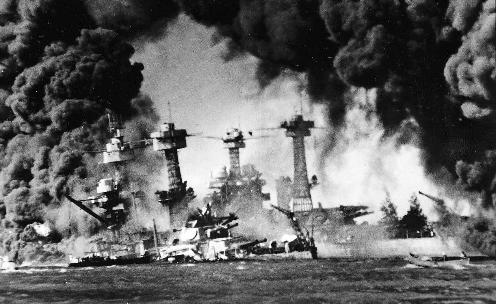
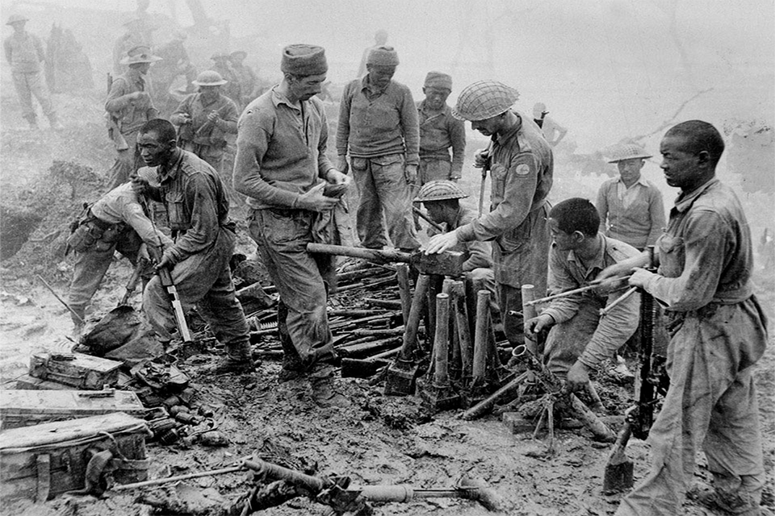
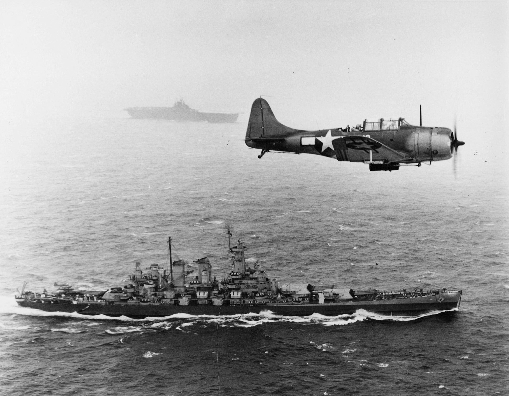
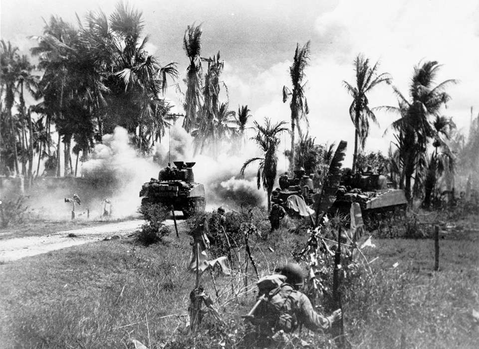
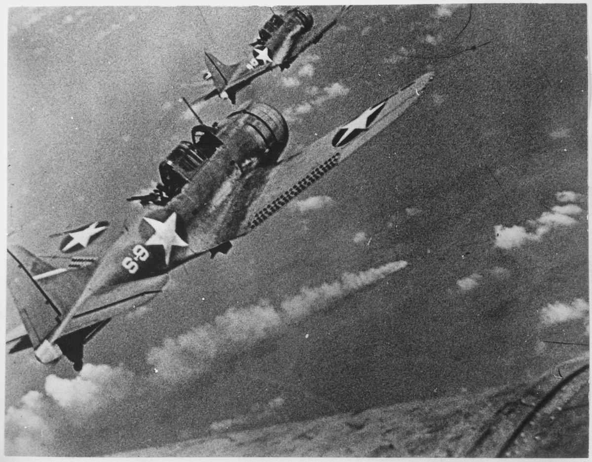

Pengeboman Pearl Harbor
Pengeboman Pearl Harbor adalah serangan dadakan yang dilakukan oleh Angkatan Laut Kekaisaran Jepang terhadap Armada Pasifik Angkatan Laut Amerika Serikat yang tengah berlabuh di Pangkalan AL Pearl Harbor, Hawaii, pada hari Minggu pagi, 7 Desember 1941. Serangan inilah yang memicu keterlibatan Amerika Serikat secara langsung di dalam Perang Dunia II. Serangan dimulai sekitar pukul 07:38 pagi waktu Hawaii. Pangkalan AL Amerika Serikat di Pearl Harbor diserang oleh setidaknya 353 pesawat tempur, pesawat pembom, dan pesawat peluncur Torpedo dari AL Jepang, dalam 2 gelombang serangan, yang diberangkatkan dari 6 kapal induk AL Jepang.
Kampanye Burma
Kampanye Burma di Palagan Asia Tenggara dalam Perang Dunia II berlangsung selama empat tahun sejak 1942 hingga 1945. Selama tahun pertama kampanye, Angkatan Darat Kekaisaran Jepang dengan bantuan dari para pemberontak Burma telah mengenyahkan pasukan Britania dan pasukan Tiongkok keluar dari Burma, dan menduduki sebagian besar negera tersebut. Dari Mei hingga Desember 1942, kampanye yang paling aktif berhenti ketika hujan muson menyebabkan gerakan taktis hampir mustahil di perbatasan berhutan dan bergunung-gunung antara India dan Burma, dan baik Sekutu dan Jepang menghadapi kendala logistik yang berat.
Ketika hujan berhenti, Sekutu melancarkan dua serangan. Pertama, serangan di pesisir Provinsi Arakan, gagal, dengan efek yang parah pada semangat juang Sekutu. KOndisi ini dipulihkan sebagian oleh perbaikan administrasi dan pelatihan, dan sebagian karena hasil dari sebuah serangan oleh pasukan di bawah Brigadir Orde Wingate yang banyak dipublikasikan. Serangan ini mungkin juga mendorong para komandan Jepang dalam melancarakan serangan-serangan besar tahun berikutnya, yang gagal secara tragis.
Kampanye Kepulauan Gilbert dan Marshall
Kampanye Kepulauan Gilbert dan Marshall merupakan bagian dari Teater Pasifik, Perang Dunia II yang terjadi pada November 1943 hingga Februari 1944. Kampanye ini merupakan operasi strategis dari Armada Pasifik dan Korps Marinir (United States Marine Corps, USMC) Angkatan Laut Amerika Serikat di Pasifik Tengah dengan tujuan untuk membangun lapangan terbang yang memungkinkan untuk mendukung serangan udara berbagai operasi di Pasifik Tengah. Kampanye ini dimulai dengan pertempuran tiga hari di Pulau Betio di Atol Tarawa. Tahun sebelumnya marinir AS juga telah melakukan serangan ke Pulau Makin, pada Agustus 1942. Pangkalan Jepang di Kepulauan Gilbert dan Kepulauan Marshall merupakan batas terluar pertahanan sisi timur bagi Kekaisaran Jepang. Kampanye ini dilanjutkan dengan Kampanye Marianas pada musim panas berikutnya.
Pertempuran Filipina
Kampanye Filipina tahun 1944-45 adalah kampanye Sekutu untuk menaklukkan tentara Jepang yang menduduki Filipina selama Perang Dunia II. Invasi dimulai pada 20 Oktober 1944 dan peperangan terus berlangsung hingga berakhirnya Perang Dunia II.
Pertempuran Midway
Pertempuran Midway adalah pertempuran laut besar yang dianggap sebagai peristiwa paling penting dalam medan Perang Pasifik Perang Dunia II. Pertempuran terjadi antara 4 Juni dan 7 Juni 1942, sekitar sebulan sesudah Pertempuran Laut Koral dan enam bulan setelah Pengeboman Pearl Harbor. Angkatan Laut Amerika Serikat dengan telak meredam serangan Angkatan Laut Kekaisaran Jepang terhadap Atol Midway, dan mengakibatkan kerugian tidak ternilai dan merebut inisiatif strategis dari Angkatan Laut Jepang.
Pertempuran Okinawa

Pertempuran Okinawa, nama kode Operasi Iceberg, adalah pertempuran di Kepulauan Ryukyu, Okinawa yang dicatat sebagai serangan amfibi terbesar dalam Perang Pasifik, Perang Dunia II. Pertempuran berlangsung selama 82 hari, mulai awal April hingga pertengahan Juni 1945. Melalui kampanye panjang strategi lompat pulau, Sekutu sedikit demi sedikit mendekati kepulauan Jepang. Pulau Okinawa adalah satu-satunya pulau besar milik Jepang yang berada 340 mi (550 km) dari daratan utama Jepang. Okinawa direncanakan sebagai basis operasi udara untuk rencana invasi ke daratan utama Jepang yang diberi kode Operasi Downfall. Empat divisi dari Angkatan Darat ke-10 Amerika Serikat (Divisi 7, Divisi 27, Divisi 77, dan Divisi 96), serta dua Divisi Marinir (Divisi 1 dan Divisi 6) bertempur di darat, sementara Divisi Marinir 2 disiapkan sebagai cadangan amfibi dan tidak pernah didaratkan. Invasi ini didukung oleh angkatan laut, pasukan amfibi, dan angkatan udara taktis.
Serangan Bom Atom Hiroshima dan Nagasaki

Amerika Serikat menjatuhkan bom atom di kota Hiroshima dan Nagasaki, Jepang, pada bulan Agustus 1945, tahap akhir Perang Dunia Kedua. Amerika Serikat menjatuhkan bom dengan persetujuan dari Britania Raya sebagaimana tertuang dalam Perjanjian Quebec. Dua operasi pengeboman yang menewaskan sedikitnya 129.000 jiwa ini merupakan penggunaan senjata nuklir masa perang untuk pertama kali dan satu-satunya dalam sejarah.
.png)